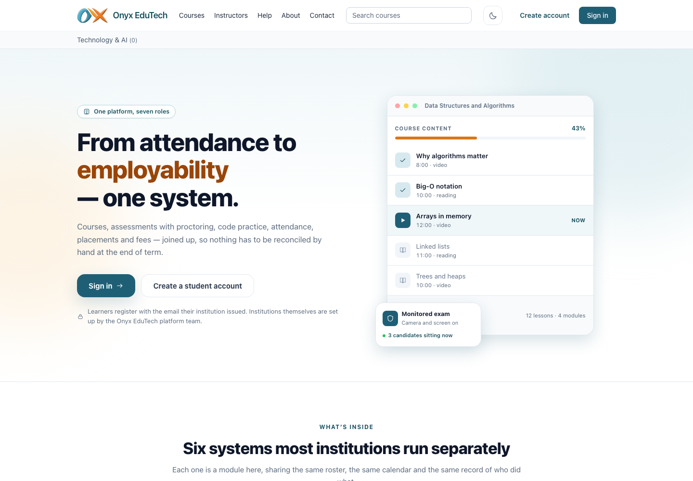
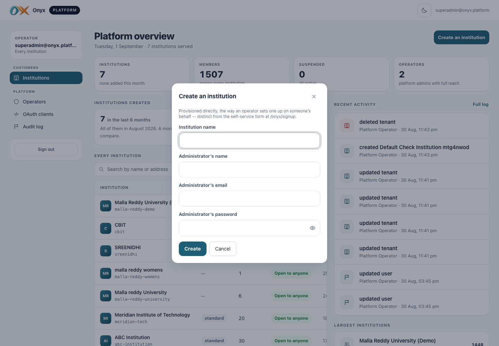
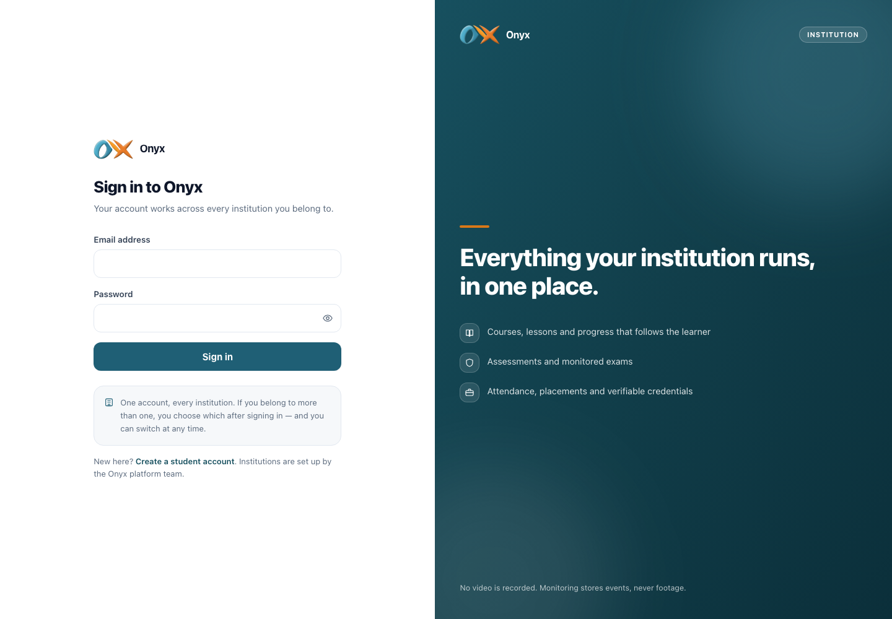
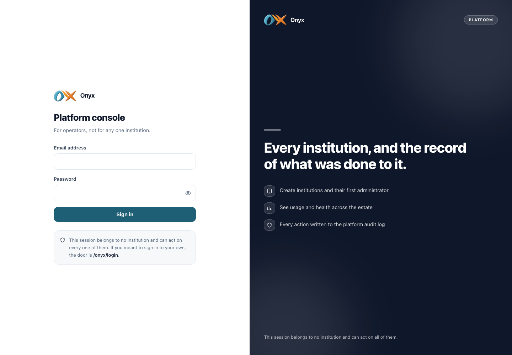

Learning, code practice, exams, attendance, placements and finance, built to run as one.
Onyx LMS · a live platform, shown as it runs25 features · 21 extras · 7 institutions live · 1,507 members
The idea
One system, not six that never agree
Onyx is one platform for running an institution end to end. The six things most colleges buy as separate software, learning, code practice, assessment with proctoring, attendance and timetable, placements and careers, and fees and finance, are built here as one joined-up system. One login, one record, one place where the work, the marks and the money already agree.
One student record
A learner's lessons, code, exam marks, attendance and placement history live in one record, not six.
Many institutions, one operator
Seven institutions and 1,507 members run on the live deployment, each driving its own course, live-class and fee revenue, tracked apart.
Verified live
339 automated checks against the deployed product, an accessibility sweep with axe-core, and 140 cross-tenant probes that found no leak.
onyx-edutech.app

The platform's own front page, live today
Onyx · the platform
The business
The commercial model
One company runs the platform and sells it to many universities, colleges and schools. A super admin sits above every institution, onboarding, running, suspending or removing each one. Each institution then earns its own way, through course sales, paid live-class programmes and student fees, all tracked apart. Seven institutions and 1,507 members run on the live deployment today.
How the money is made
01Individual course sales
Courses sell through a full public storefront with catalogue, cart, checkout, coupons, wishlist and invoices, and unlock the moment payment clears. This income is reported apart from student fees.
02Paid live-class cohort programmes
Live Class programmes run 4, 12 or 16 weeks and end in a named certificate. They are sold as cohorts, and their revenue is tracked separately from both course sales and fees.
03Student fees
Fee structures, invoices, online payment and receipts, with a clear view of who still owes what. Fee income is kept apart from course and live-class income so each line reads on its own.
04Operator-run institutions
The operator can stand up and run an institution on a customer's behalf without the customer ever signing in. That turns setup and day-to-day operation into a managed service the platform company can charge for.
/onyx/platform

Standing up a new university, from the operator console
/onyx/finance
Each institution's own revenue, course income kept apart from fees
Onboarding a new institution
1
Create the institution from the operator console.
2
Set its self-service options: self-registration, allowed email domains and community link.
3
Assign roles with the plain-language permission matrix, editable per role.
4
Publish programmes, terms and timetables, then the storefront of courses and live classes, and the fee structures.
5
Go live, or have the operator run it on the customer's behalf.
Onyx · the platform
How it is run
Two doors, cleanly separated
The super admin sits above every institution and controls its whole life. It can create a new one, suspend one, or remove it, and can run any institution on a customer's behalf without them signing in. One institution's data is unreachable from another's, proven by 140 deliberate attempts to cross that line, none of which succeeded. A platform-wide audit log records the operator's own writes and privileged reads, so managing an institution on a customer's behalf stays on the record. Across the estate, the operator sees each revenue line tracked separately in every institution: course sales, live-class programmes and student fees.
The people who run the platform and the people who use an institution come in through different doors, and neither can wander into the other. One account works across every institution a person belongs to.
/onyx/login

The institution door, for staff and learners
/onyx/platform/login

The operator door, for the platform team
FOR THE OPERATOR
Every institution, from above
Create, suspend or remove an institution, and run one on a customer's behalf when they ask, without ever needing their password.
FOR THE INSTITUTION
Its own front desk
Self-registration rules, allowed email domains and community links are set by the institution itself, not by a support ticket.
FOR EVERY PERSON
One account, one identity
A single sign-in that carries a person across every institution they belong to, with the right role in each.
Onyx · the platform
What is inside
Five pillars, one roster, one calendar, one record
The next five pages walk each part of the platform, value first, with the real screen beside it. They are not five products bolted together, they are one system: a mark entered in an exam, a lesson finished, a fee paid and a certificate issued all move the same learner's record.
Everyday learning
Onyx Learn
Courses, lessons, attendance and homework — the part every learner touches daily.
Learning to code
Onyx Code Lab
A real editor, real execution and instant marking, with nothing to install.
Tests and exams
Onyx Assess
Scheduled papers, watched exams, marking that a human still owns.
Getting a job
Onyx Career
Contests, interviews, verifiable certificates and the employers on the other side.
Running the institution
Onyx Campus
Programmes, examinations, money, parents and the security under all of it.
Onyx · the platform
Everyday learning
Onyx Learn
Courses, lessons, attendance and homework — the part every learner touches daily.
Everyday learning that gets finished
This is the part a learner opens every day: the course they are in, the work that is due, and a register that cannot be faked. For the institution it means attendance it can trust, homework tracked from setting to return, and learners who know the single next step that moves them forward. No app to install.
Attendance, by QR code or by handHomework: set it, mark it, hand it backOne screen, what to do next
Attendance nobody can fake
A lecturer with a full room loses minutes to a paper register while friends still sign in for people who never arrived.
The teacher opens a session and a code goes on the projector that redraws every 15 seconds, so a photo sent to a friend outside the room is dead within half a minute, and every learner carries a running attendance percentage.
Picking up where you left off
A working student logs in after a week away and cannot remember what was due or where in the course they stopped.
The home screen shows the course they were last in, the homework due, a streak counted from real activity, and the single step that would raise their readiness fastest, and the lesson resumes on the exact line they left.
Live in the product
/onyx/dashboard
One screen that says what to do next
/onyx/courses/…/attendance
Attendance by a code that rotates every 15 seconds
Onyx Learn
Learning to code
Onyx Code Lab
A real editor, real execution and instant marking, with nothing to install.
Teach coding without a computer lab
Teaching programming usually means machines to set up, software to install and hours of marking by hand. Onyx Code Lab removes all three. Learners write and run real code in the browser, every run is checked the instant it finishes, and the institution provisions nothing. One console can take a full cohort from first line to marked project.
Write and run real code, in the browserMarked automatically, the instant it runsCode runs safely, every time
A whole class hits Run
A first-year programming class submits the same exercise within the same hour.
Each submission runs inside a locked-down space and is marked against prepared cases the instant it finishes, so every learner gets a score and feedback that names what happened, with no lab to set up and no marker staying late.
Building a multi-file project
A learner spends several weeks building a project across several files and cannot risk losing a working version.
The workspace keeps save-points so an earlier state is never lost, and the learner hands the finished project to the course teacher for review, all in the browser with nothing installed.
Live in the product
/onyx/practice/…
Graded the instant it runs, against hidden cases
/onyx/practice/…
A real editor, running in the browser
Onyx Code Lab
Tests and exams
Onyx Assess
Scheduled papers, watched exams, marking that a human still owns.
Exams that hold up to scrutiny
An institution can run exams it can defend. Papers open and close on the server's clock and draw from randomised banks, so no room sits one identical test. Integrity is watched, but every flag is evidence a named person weighs, never an automatic fail. Objective marking is instant; written work is still judged by hand, and results wait for the institution to release them.
Scheduled, timed online testsExam integrity, watched and then judged by a personMarking, automatic where it can be, by hand where it matters
A crowded exam hall
Two hundred candidates sit the same module in one hall, close enough to see each other's screens.
Each draws a different paper from a randomised bank, rotated down the register by roll number, so a glance sideways lands on a different question and the sitting stays fair.
A camera flags a candidate
Midway through a timed exam, a candidate's camera and screen throw up something odd.
The console ranks attempts worst-first and shows the flag as evidence, and a named person decides what it means, because nothing here fails a learner automatically.
Live in the product
/onyx/invigilate
Integrity flags, ordered worst-first for a human
/onyx/results
Released to the learner in one place, when the institution says so
Onyx Assess
Getting a job
Onyx Career
Contests, interviews, verifiable certificates and the employers on the other side.
Where study becomes a job offer
This is where study becomes a job offer. Learners build a profile where every skill traces to real evidence, apply to roles employers post, and carry certificates any employer can check without an account. The placement office runs the whole pipeline, and each employer sees only their own applicants. Placement stops being paperwork and becomes a record that stands up.
Certificates an employer can check for themselvesJobs, applications and employersA profile built to be sent to an employer
Proving a credential is genuine
A graduate lists a course certificate on a job application, and the hiring company wants to know it is genuine before an interview.
The company opens the credential's public page using its id, with no account, and sees whether it is genuine, who issued it, and whether it was ever withdrawn.
Running the placement pipeline
An employer posts a role with stated eligibility rules and learners across the institution apply to it.
The placement office runs the whole pipeline from one console while each employer sees exactly their own applicants and no other company's, keeping the drive orderly and private.
Live in the product
/onyx/resume
A resume rebuilt from the record, never stale
/onyx/verify/…
A credential an employer verifies with no account
Onyx Career
Running the institution
Onyx Campus
Programmes, examinations, money, parents and the security under all of it.
The whole institution, run and secured
Programmes, examinations and fees run from one console, and a double-booked room or teacher is refused before a learner ever sees it. Course and live-class income is tracked apart from fees, so you know where money comes from. Parents see only what the learner switches on. And 140 attempts to read another institution's data all failed.
Programmes, terms and timetablesFees, payments and receiptsSecure by design, not by promise
Timetables that refuse clashes
A timetabler building next term assigns two classes to the same room at the same hour.
The console refuses the clash before publication, so no learner's timetable ever shows a double-booked room or teacher.
Sealed from other institutions
Seven institutions run on the same deployment, and a college wants to be sure its records cannot be seen by any of the others.
Each institution's data is unreachable from another's, every role sees only what it is allowed, and 140 deliberate attempts to cross that line all failed.
Live in the product
/onyx/exams
Examinations, scheduled to published
/onyx/permissions
Every role against every permission, in plain words
Onyx Campus
Beyond the brief
Twenty-one capabilities nobody asked for
The proposal listed 25 requirements. All 25 were delivered, and verified against the deployed product. Alongside them, 21 more capabilities were built that nobody asked for. None is a loose end. Each one closes a gap a real institution runs into: the exam that leaks down a row of desks, the certificate that outlives the reason it was awarded, the second system an institution would otherwise buy just to sell a course. Every one runs on the live deployment today, counted among the 339 automated checks and the 140 cross-tenant probes that found no leak. This is what a platform looks like when it is built past the brief, not up to it.
For learners
A one-click resume builder assembles an A4 PDF from the learner's live record, and an opt-in public profile shares only what they choose to show. A readiness score points to the single next action that raises it fastest, and web-page problems in HTML, CSS and JavaScript run with a live preview, so front-end work is practised the way it is actually done.
For teaching
A check-in code that redraws every 15 seconds ends proxy attendance, because a photo of it is dead before it reaches the corridor. A question the asker can mark answered becomes a tracked ticket with a deadline when it is left hanging, and cohorts retire at the end of a term without losing the history attached to them.
For examinations
Parallel papers rotate down the register by roll number so neighbours never sit the same questions, and anonymous marking with a moderation gate stands between a mark and its release. Seating plans print and every script downloads per candidate or for a whole sitting, while integrity flags are weighted evidence a named person rules on, never an automatic fail.
For credentials
A certificate is checked by anyone holding its id, with no account to create. When one is withdrawn its public page keeps answering, now reading withdrawn, so a revoked award cannot quietly pass as valid.
For selling courses
Paid Live Class programmes run 4, 12 or 16 weeks and end in a named certificate, and individual courses sell and unlock on payment with that income reported apart from student fees. A full public storefront carries catalogue, cart, checkout, coupons, wishlist and invoices, so an institution sells to the public without adding a second system.
For running the platform
An operator console creates, suspends or removes a whole institution and can run one on a customer's behalf without them signing in, while each institution sets its own self-registration, allowed email domains and community link. A plain-language permission matrix is editable per role, a platform-wide audit log records operator writes and privileged reads, OAuth lets outside software act for a user with consent that can be revoked, and a dark theme covers every screen.
Onyx · the platform
In use
A day on the platform
This is a day in the life of six people a university would recognise, each drawing real value from the same platform.
A first-year student
It is Monday morning, she has three courses, homework due this week, and a coding exercise she keeps putting off.
Opens her home screen, which shows the course she was last in, the work due this week, and a readiness score naming the single action that would raise it fastest.
In the lecture hall she scans the QR code on the projector with her own phone, no app to install, and her attendance is recorded against a running percentage.
Hands in her homework online, set with its marking guide attached, and later gets it back with a score and written feedback.
Opens Code Lab, writes and runs real code in the browser, and sees it marked against prepared cases the moment it runs.
She always knows the one thing to do next, and never loses a mark to a missed register.
A lecturer
He teaches a second-year module and wants the register, the homework and the questions in one place instead of three.
Opens a session at the start of class; a check-in code goes on the projector and redraws itself every 15 seconds, so a photo sent to a friend outside the room is dead within half a minute.
Sets homework with its marking guide, then marks each submission and hands it back with a score and written feedback, late work handled by the institution's own rule.
Answers questions asked on the course itself and marks them answered; any he leaves becomes a support ticket with a clock on it.
Proxy attendance stops working, and every question reaches the person who can answer it.
An examinations officer
End-of-term exams for a large cohort, sat online, and she owns both the integrity and a clean release.
Schedules a timed paper that opens and closes on the server's clock, drawn from randomised banks and rotated down the register by roll number so neighbours do not sit an identical paper.
Watches the integrity console, which orders attempts worst-first, and weighs each flag herself; no flag is an automatic fail.
Sends written answers to markers anonymously, with a moderation gate before publication, then releases results so each learner sees their score, grade and how the cohort did.
A defensible exam where a person, not a flag, makes the call, and nothing is visible until she releases it.
Onyx · the platform
In use
A day on the platform, continued
A placement officer
Recruitment season, several employers posting roles, and students who need interview practice before the real thing.
Reviews the roles employers have posted with their eligibility rules, and runs the application pipeline while each employer sees only their own applicants.
Books practice interviews scored against written criteria, recorded only with consent, where the student sees the score and comments but the interviewer's private notes stay private.
Points an employer at a candidate's certificate id, which opens a public page with no account showing whether it is genuine, who issued it, and whether it was ever withdrawn.
Each employer's applicants stay walled off from every other company, and a certificate checks out without a phone call.
A registrar
The start of a new term, with programmes to publish, rooms to allocate and fees to raise.
Sets up programmes, terms, cohorts and who teaches what from one console; a double-booked room or teacher is refused before it reaches a learner's timetable.
Runs examinations start to finish, scheduling, seating, marks entry, moderation and publication, with the candidate's script and the marker's copy both downloadable as PDFs.
Raises fee structures and invoices, takes online payment and issues receipts, with course and live-class income tracked apart from fee income.
The timetable cannot double-book, and course and live-class income stay separated from fee income in the accounts.
The platform operator
A new college is signing up while an existing institution needs hands-on help, all from above the seven institutions already running.
Creates the new institution from the operator console, then sets its self-service options: self-registration, allowed email domains and a community link.
Steps into an existing institution and runs it on their behalf, without anyone there signing in, to fix a configuration the staff cannot reach.
Edits a role's permissions in a plain-language matrix, while every operator write and privileged read is written to a platform-wide audit log nobody can edit afterwards.
One person can stand up, suspend or step into any institution, and every privileged action leaves a record.
Onyx · the platform
Why it wins
Built for the World as It Is
The world a student graduates into runs on two questions this platform answers directly: is the work real, and can the person do the job. When a check-in code can be photographed and a paper can be copied, integrity has to be built in, not promised. When an employer cannot trust a certificate, the certificate has to check itself. This platform builds everyday learning, coding, assessment, careers and administration as one product, so a skill a learner practises this week is the skill an employer can verify later with no account and no phone call. It runs today for seven institutions and 1,507 members, with each institution's data unreachable from any other. And it was checked live, not described: 25 of 25 proposal requirements delivered, 21 more capabilities built on top, 339 automated checks against the deployed product, and 140 deliberate attempts to read another institution's data, none of which succeeded.
Integrity, engineered
When a code can be photographed and a paper can be copied, integrity has to be built into the mechanism. The check-in code redraws every 15 seconds, so a photo sent outside the room is dead within half a minute; exams rotate parallel papers down the register by roll number so a room does not sit one identical paper; and camera and screen flags are evidence a named person weighs, never an automatic fail.
A certificate that checks itself
Every credential carries its own id, and anyone holding it can open a public page with no account and see whether it is genuine, who issued it, and whether it was withdrawn. A revoked certificate keeps answering "withdrawn", so a lapsed qualification cannot be passed off as current.
Employability, wired in
A readiness score names the one action that would raise it fastest, a resume builder assembles an A4 PDF from the learner's live record the moment they press the button, and a shareable profile traces every skill back to real evidence. Employers post roles, learners apply against stated eligibility rules, and the placement office runs the pipeline, so the route from a lesson to a job stays inside one product.
One wall between every institution
Seven institutions and 1,507 members run on the live deployment today, each driving and tracking its own course, live-class and fee revenue apart. One institution's data is unreachable from another's, tested by 140 deliberate attempts to cross that line, none of which succeeded.
Delivered live, not described
This is a working platform, verified against the deployed product: 25 of 25 proposal requirements delivered, 21 more capabilities built on top, 339 automated checks, and an accessibility sweep. An operator sits above the institutions and can create, suspend or remove one, or run it on a customer's behalf, so adding an institution is an administrative act rather than a rebuild.
Onyx · the platform
The evidence
Proof, not a prototype
Nothing here is a demo. Every one of the 25 proposal requirements was driven live against the deployed product, not shown as a slide. On top of them, 21 further capabilities were built and checked the same way. 339 automated tests run against the live database on every change, covering all six roles and the schema's real column widths and constraints, not an in-memory stand-in. An accessibility sweep with axe-core passed. A cross-tenant security sweep of 140 deliberate attempts to reach another institution's data returned nothing. Seven institutions and 1,507 members are running on it today.
25 / 25Proposal requirements delivered
Every one driven live against the deployed product, none left as a mockup.
339Automated checks
Run against the live database on every change, across all six roles.
140Cross-tenant probes
Deliberate attempts to read another institution's data. None got through.
21Extras built
Capabilities beyond the proposal, verified to the same standard.
/onyx/audit
Every consequential action, written to a record nobody can edit
/onyx/platform/tenants/…
One of seven institutions, run from the operator console
Onyx · the platform
Verified live, ready for your first institution
Seven institutions and 1,507 members already run on this today. Twenty-five of twenty-five proposal requirements are delivered, with twenty-one more built beyond them. 339 automated checks ran against the deployed product, an accessibility sweep with axe-core, and 140 cross-tenant probes that found no leak. This is a platform in daily use, not a prototype. It is ready for the institution you show it to next.
For the EZiL team
Owner, use this deck as evidence, not as a promise. Every claim here traces to the running deployment, so a university can check it for themselves. Walk a buyer through the five pillars, then put the numbers on the table: 25 of 25 delivered, 21 built beyond the brief, 339 automated checks, 140 cross-tenant probes with no leak. When they ask whether it is real, the answer is that seven institutions already run on it. And when you win one, you can stand up their institution and even run it on their behalf from the operator console. Treat this deck as your template for every pitch that follows.
Real, verified, and in use today. Onyx LMS · every screen in this document captured live against onyx-lms-v2.vercel.app.